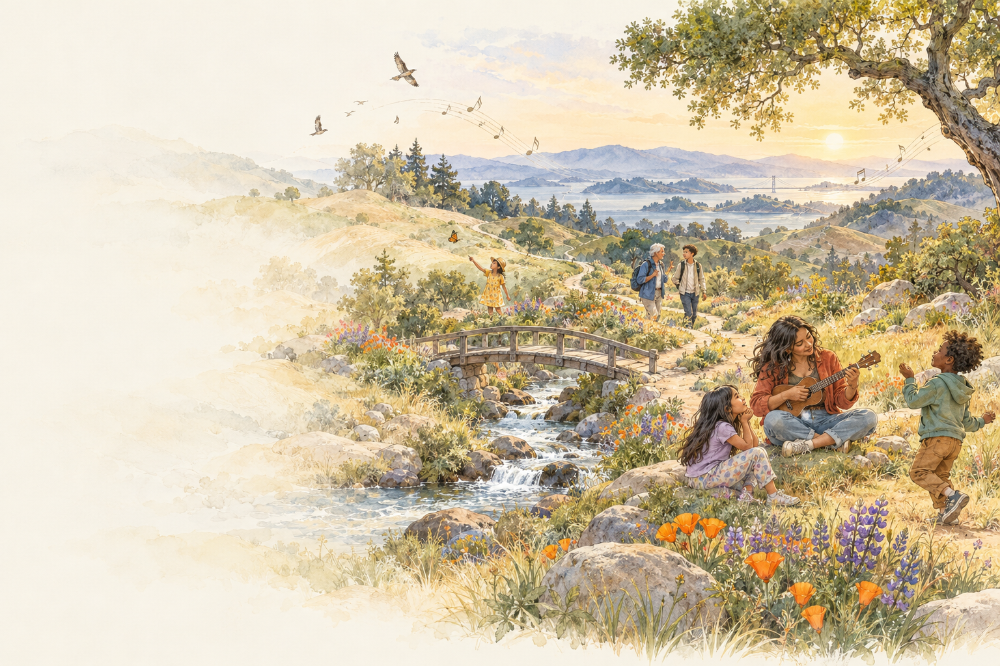

WORDS TO CARRY. SONGS TO SHARE.
Find a song for
this moment.
To begin. To belong. To find your way back.
Music for learning and becoming, together.
Listen · Save your favorites · Sing along

THREE WAYS TO STEP INA song can be enough to begin.
THE SONG COLLECTION
What does this moment need?
Find a familiar feeling.
Discover a different way in.
WHY SONGBRIDGE
A song can hold
a way forward.
Sometimes it’s the refrain that helps a group come back together. Sometimes it’s a line that makes someone feel seen. Sometimes it’s a playful invitation to move, speak, or try.
SongBridge brings together Tanya Pearson’s songs about voice, belonging, language, learning, and the conditions that help us grow.
Start with listening. Join in your own way. Let the song become part of a moment that matters.